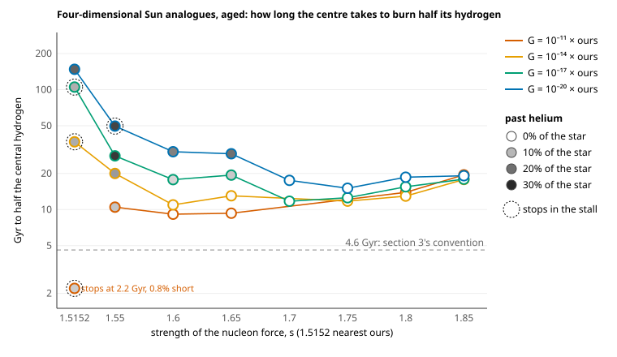

Paper 2: where it stands
In one screen. Paper 2 asks what kind of stars a four-dimensional universe would have, and what they would make. The forces that decide it are not given, so the paper narrows them in windows: how strong the nucleon force is (its strength , with 1.5152 the value nearest ours), how strong the weak force is, and how strong gravity is (, in multiples of ours). The latest stretch of work aged the stars themselves, shell by shell, instead of judging their lives from a frozen zero-age core. Five things came out of it.
- Sun-like stars live far longer than assumed. Of the 29 Sun analogues, 28 burn half their central hydrogen in 10.6–177 Gyr, 2.3–39 times the 4.6 Gyr the earlier convention gave every one of them. Time is not what limits this universe.
- Near our strength, the stars make heavy elements while still burning hydrogen. At ≤ 1.55, 9–30% of a star is past helium by the end of its run, mostly element 8, oitrogen, pxygen and gluorine. Our own main-sequence stars make only helium.
- What metals do depends on which metals. One to two per cent of the first stars’ own ash (elements 6–12) moves a four-dimensional star’s opacity by only −0.4% to +4.2%: absorption by a light ion falls much faster with its charge than in our world. The rock row (elements 13–23), which the exploding stars return, is different: ×1.03–6.5 at the centre and ×1.97–14 at 0.9 of the mass, where heavy ions keep their inner electrons. The first second-generation star bears that out: the Sun analogue at = 10⁻¹⁷, = 1.5152, built with 2% of the rock row, comes out 29% fainter, 23% larger and 17% cooler at the surface than the same star built primordial, and over its first 3 Gyr its centre burns 15% slower. With 2% of the stars’ own ash instead, nothing moves by more than 11%.
- What comes back is mostly the rock row, and less of it the further the strength is from ours. Stars heavy enough to grow a Chandrasekhar-mass core explode and return the elements that make planets in our world. Near our strength the metals returned come to 0.049–0.25 of the mass the stars lock away; at = 1.8, 0.00038–0.0015.
- One limit is real physics, not numerics. Two stars at = 1.5152 stop when their core’s oitrogen runs out and the stirred core collapses faster than a solver in thermal balance can follow.
What is still declared rather than computed is the stars’ lives after hydrogen: how their cores grow, and which end as dead remnants and which explode. That decides what goes back into the gas for the next generation, and it is the largest open question.

![What the first stars give back, at G = 10⁻¹⁷ × ours. (a) Each aged star of the mass ladders (vertical: its mass in Chandrasekhar masses) at each strength s of the nucleon force, filled by its share past helium when its run ends; a dashed outline marks a star whose run was cut short of exhaustion and whose life is carried on at its last rate. Below the solid line a star outlives 30 Gyr and its mass stays locked away (the dashed grey line: 10 Gyr). Above it a star dies, as a dead remnant returning its envelope, or, once its core grown by g reaches the Chandrasekhar mass, by exploding and returning everything. The hatched band is where that depends on g, from 1 at its top to 1.5 at its bottom; the dashed orange line is g = 1.25, by which each star’s outline is coloured. From s = 1.75 up the stars burn hydrogen to helium and little further. (b) The net yield p, the elements past helium returned per unit of mass locked away, over every declared choice (shaded) and at the middle choice (α = 2.35, g = 1.25, winds 3%, stars dying within 30 Gyr; the line), with the middle choice’s make-up beneath: the rock row (elements 13–23), this world’s iron, and the light ash the stars held.](../figures/fates.svg)
What is established
Each line says how it stands: computed (the book’s own calculation, checked where a check exists), carried (taken from our world), declared (a stated choice) or provisional (computed, waiting on a run).
- Our Sun first, as the check (computed; section 4). The ageing machinery burns 0.96–1.04 times Model S’s energy on its own conditions, puts our Sun’s centre at 15.73 MK against the standard model’s 15.70, and on measured opacity (OPAL) gives 1–3 M☉ stars 0.90–0.94 of the published tracks’ luminosity (MIST) and 0.99–1.03 of their surface temperature at half their hydrogen. The book’s own opacity, built from its own atoms, does almost as well.
- The windows (computed, rates partly carried; section 2). Of the grid of strong and weak forces, 14 points burn hydrogen past helium, in the hottest cores (7.8–18.8 MK).
- Stars that live (computed at zero age, the analogue’s definition calibrated on ours; section 3). Every gravity from 10⁻¹⁴ to 10⁻²⁰ has long-lived stars; 13 analogues climb past helium, to elements 6–12.
- The charge law in the stellar plasma (computed). The pinned screens nuclear reactions (proton + proton ×1.02–1.38) and cuts long-wave light out of the opacity (up to ×1.55 at the strongest gravity), and changes the pressure by −3.5 to −0.2 %. Both bites are in the aged stars; they barely move the lives.
- Stars that age (computed; section 4). 28 of 29 analogues halve their central hydrogen in 10.6–177 Gyr. The slowest are at = 1.5152: 43, 125, 177 Gyr from = 10⁻¹⁴ to 10⁻²⁰.
- The oitrogen stall (computed; section 4). At = 10−11 and 10−14, = 1.5152, the centre stops at hydrogen 0.37–0.38, pxygen 0.59 and oitrogen 0.03–0.04 by mass. Following those stars further needs the energy a contracting core releases, which the solver leaves out.
- What the first stars hold (computed; section 4). Elements past helium: 9–30% of the star at ≤ 1.55, 2–20% at 1.6–1.65 (coron, element 6, darbon, element 8 and oitrogen), 0.3–4% at 1.7, and at most 0.1% from 1.75 up, where stars burn hydrogen to helium and stop.
- The second generation, a first look (computed; one analogue, zero age and the first 3 Gyr). The star built with the metals in its starting composition (as seed nuclei in the burning network) and in its opacity, each switched on alone and then together: 2% of the rock row makes it 29% fainter and 23% larger, its stirred core 0.11 of the mass against 0.13; almost all of that is opacity.
- What metals do to the opacity (computed, without spectral lines). The book’s own four-dimensional ions, elements 4–23, every first ionization equal to the periodic table’s: the figures in point 3 above. (A first version of this line said metals barely change a four-dimensional star at all; a slip in the code had dropped every ion’s bound–free absorption, leaving only free–free. Corrected the same day.)
- What the stars give back (computed on declared endings; section 4). On mass ladders at six strengths, the metals returned per unit of mass locked away (the net yield ) are 0.049–0.25 at ≤ 1.55, 0.011–0.088 at 1.6–1.65, 0.00062–0.027 at 1.7 and 0.00038–0.0015 at 1.8. How the cores grow decides which masses explode and sets most of the band. At the middle choice, 72–95% of it at ≤ 1.65 is the rock row (elements 13–23), made when the cores of the heaviest stars reach the Chandrasekhar mass, and only 4–6% is the light ash the stars held (13–30% with strong winds). 2 of the 29 short-lived stars stopped or were cut short of exhaustion (at most 0.01 of their central hydrogen left) and are carried on at their last rate.
What it means
A four-dimensional universe near our forces is not short of time, and not short of heavy elements. Its Sun-like stars outlive ours several times over, and at the strengths nearest ours they turn a large share of themselves into elements 8–12 on the main sequence, which ours never do. Whether those elements reach the next generation depends on how the stars end. On the declared endings the heavy ones explode and return mostly the rock row: the elements that, in our world, make planets. Near our strength the metals they give back come to 0.049–0.25 of the mass they lock away; at = 1.8, where stars burn hydrogen to helium and little further, 0.00038–0.0015.
Whether the second generation looks like the first depends on what comes back. In our world a star’s metals set its opacity, and so its size, colour and life. In four dimensions the first stars’ own light ash barely touches it, but the rock row thickens the outer layers several times over. Since the rock row is most of what returns, the second generation’s stars are fainter, larger and cooler than the first, and their centres burn more slowly. The ash’s nuclei also act as catalysts, as carbon, nitrogen and oxygen do in our Sun, quickening the burning by a few per cent; in a rock-rich star the opacity wins.
The strongest gravity behaves differently. At = 10⁻¹¹ the Sun analogue chosen at zero age burns far faster once aged than any other, and stalls early: the zero-age choice of analogue is not reliable there.
What comes next
- The last ladder star finishes (evolve4-13 on the compute runner; automatic). The star at = 1.5152 and 1.25 Chandrasekhar masses sets the top of the band near our strength, and is carried to exhaustion. The last stretch matters: the run before this one found the stars still adding up to a quarter more ash between the last few per cent of their central hydrogen and its end.
- Second-generation stars, whole lives (the compute runner). The first look above covers one analogue’s zero age and first 3 Gyr; next, its whole life, the other strengths, and the gas mix the yields actually return.
- The energy of contraction in the structure (a change to the solver; every aged run redone on the runner). It would follow the stalled stars and the giant phase, and replace the declared endings with computed ones. This is the step that most changes what the paper can claim.
- Writing it up. Sections 4 and 5 (abundances over time) from the data above, and the outline brought up to date.
How it was built
How each link is modelled (the techniques, their checks on our world, the code and what each leaves out) is how the stars are modelled. The full record of every stage that changed a result, checked one or replaced a convention, with its runs and what it moved, is supplement S1. The claim map is the outline. The aged stars can be looked inside at four.mino.mobi/star/.
papers/p2/text/status.md: every number in it is read by build.mjs from the computed data or the solvers, so this text says what the code does.